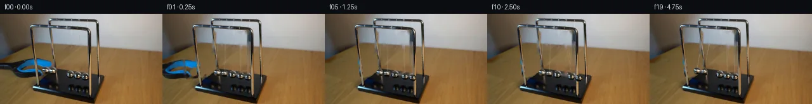

![首帧]()

Round 00
2026-11-05T01:27:39.764726+00:00像素候选变化代码 +406/−0inspection 更新
pixels 2083df4cd01d3d9a · code bb28a8f4ccb63bd1
查看本轮 generate.py 真实 diff
--- previous/generate.py
+++ current/generate.py
@@ -0,0 +1,406 @@
+"""Local pixel continuation of the supplied Newton's-cradle photograph.
+
+No generative model, reference image, external renderer, or network is used.
+The plate is locally repaired; extracted chrome-ball pixels and grabber pixels
+are composited along an analytic, damped, paired-pendulum trajectory.
+"""
+from pathlib import Path
+import csv
+import json
+import math
+
+import cv2
+import numpy as np
+from PIL import Image, ImageDraw
+from scipy.ndimage import gaussian_filter, distance_transform_edt
+
+from artifact_io import save
+
+ROOT = Path(__file__).resolve().parent
+TMP = ROOT / '.tmp'
+TMP.mkdir(exist_ok=True)
+W, H, N, FPS = 256, 144, 20, 4
+SCALE = 4
+src = np.array(Image.open(ROOT / 'first_frame.png').convert('RGB'))
+assert src.shape == (H, W, 3)
+yy, xx = np.mgrid[:H, :W].astype(np.float32)
+initial_centers = np.array([
+ [71.8, 90.3], [83.6, 92.2], [109.8, 97.5],
+ [121.6, 99.4], [133.4, 101.3]
+], np.float64)
+rest = np.array([
+ [86.2, 93.7], [98.0, 95.6], [109.8, 97.5],
+ [121.6, 99.4], [133.4, 101.3]
+], np.float64)
+RADIUS = 5.62
+AMPLITUDE = 14.4
+LENGTH_PX = 77.0
+PERIOD = 0.96
+DAMPING = 0.032
+SLOPE = 1.9 / 11.8
+
+
+def poly_mask(points):
+ m = np.zeros((H, W), np.uint8)
+ cv2.fillPoly(m, [np.rint(points).astype(np.int32)], 255)
+ return m
+
+
+def circle_mask(center, r):
+ return (np.hypot(xx - center[0], yy - center[1]) < r).astype(np.uint8) * 255
+
+
+def thread_anchors(i):
+ x = rest[i, 0]
+ return [(x - 1.2, 20.0 + (x - 50) * 0.055),
+ (x + 2.4, 9.0 + (x - 79) * 0.035)]
+
+
+# An explicit local silhouette includes the black shaft and both blue/black
+# branches, while keeping the opening in the curved handle transparent.
+tool_envelope = poly_mask([
+ (0, 78), (21, 78), (29, 77), (45, 70), (61, 70), (73, 73),
+ (82, 78), (84, 84), (89, 90), (90, 97), (74, 100),
+ (56, 101), (34, 103), (17, 101), (6, 97), (0, 94)
+])
+blue = (src[..., 2].astype(float) - src[..., 0] > 20) & (src[..., 2] > 62)
+luminance = src.mean(2)
+dark = luminance < 68
+tool = ((blue | dark) & (tool_envelope > 0)).astype(np.uint8) * 255
+# Keep black handle portions connected without filling the large handle opening.
+tool = cv2.morphologyEx(tool, cv2.MORPH_CLOSE, np.ones((3, 3), np.uint8))
+tool = np.minimum(tool, tool_envelope)
+for center in initial_centers[:2]:
+ tool[circle_mask(center, RADIUS + 0.8) > 0] = 0
+
+# Poles are fixed and sit in front of the withdrawing grabber. Their exact
+# photographic pixels are retained. The rear pole can be hidden by balls.
+front_axis = 49.0 + 0.110 * (yy - 22.0)
+rear_axis = 78.5 + 0.145 * (yy - 24.0)
+front_rail = (np.abs(xx - front_axis) < 2.25) & (yy > 28) & (yy < 117)
+rear_rail = (np.abs(xx - rear_axis) < 2.0) & (yy > 16) & (yy < 108)
+rail = front_rail | rear_rail
+# Recover tool pixels occluded by the upright, before the source is translated.
+rail_over_tool = (rail & (tool_envelope > 0)).astype(np.uint8) * 255
+tool_texture = cv2.inpaint(src, rail_over_tool, 3, cv2.INPAINT_NS)
+
+# Reconstruct the initially occluded table. Fitting uses only table pixels in
… diff truncated; 319 more lines …